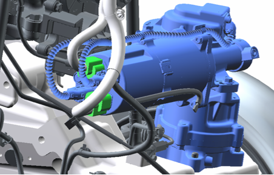
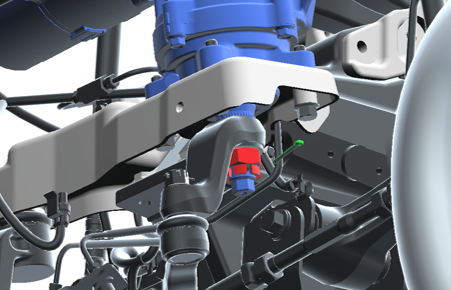
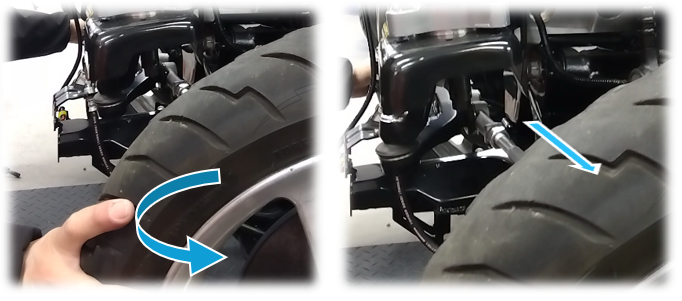
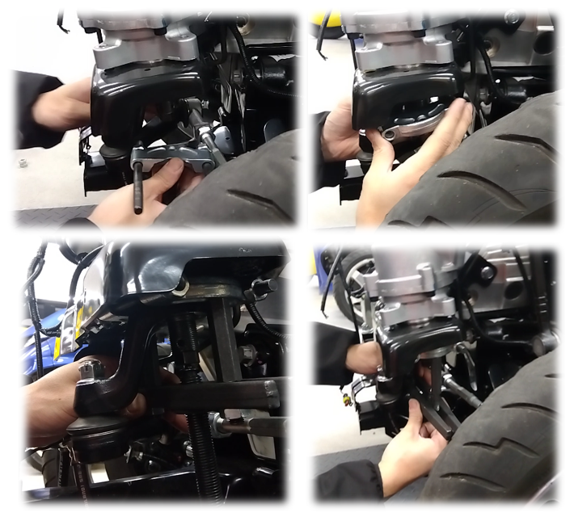
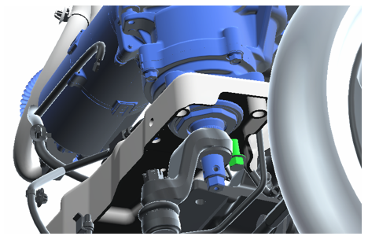
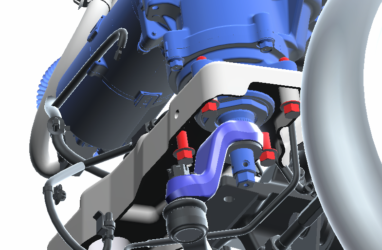
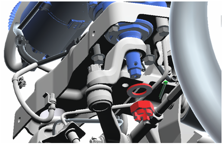

9-2 ステアアクチュエーター
構成図
|
1 |
ACTUATOR ASSY, STEERING CONTROL (C5110-B1000-B) |
2 |
BOLT, FLANGE (Z2210-05000) |
|
3 |
NUT, CASTLE (D9311-62200) |
4 |
PIN, COTTER (D9551-37400) |
取り外し前作業
-
フロントサポート取り外し4-5-1 フロントサポート
取り外し手順

1.CONTROLLER UNIT, DRIVE取り外し
-
コネクターを取り外す。

-
コッターピンを取り外し、キャッスルナットを取り外す。
-
ボルト(A)3本を取り外す。
-
ボルト(B)を緩める

-
タイヤ(またはフロントアクスル)を回転させて左旋回状態する。

2.ARM, PITMAN切り離し
-
SST(ベアリングセパレータなど)をARM, PITMANとACTUATOR ASSY, STEERING CONTROLの隙間に取り付ける。
-
SST(ベアリングセパレータなど)のボルトを少しずつ回し、ARM, PITMANとACTUATOR ASSY, STEERING CONTROLを切り離す。
-
SST(ベアリングセパレータなど)を取り外す。

-
ボルト(B)を取り外し、ACTUATOR ASSY, STEERING CONTROLを取り外す。
取り付け手順
-
ACTUATOR SHAFTの欠歯部 (A) を、ARM（PITMAN）のセレーション位置 (B) に合わせ、位置を確認した上でかん合させる。

1.ACTUATOR ASSY, STEERING CONTROL取り付け
-
ボルト4本でACTUATOR ASSY, STEERING CONTROLを取り付ける。

-
ワッシャーおよびキャッスルナットを取り付ける。
-
新品のコッターピンを取り付ける。
-
コネクターを取り付ける。
2.フロントサポート取り付け